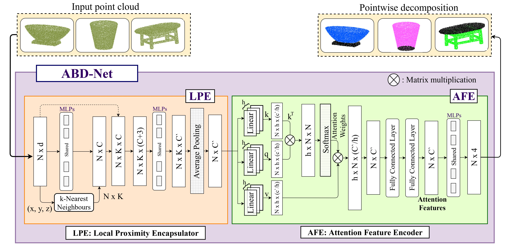

|  |
ABD-Net: Attention Based Decomposition Network for 3D Point Cloud Decomposition
Siddharth Katageri, Shashidhar Kudari, Akshay Gunari, Ramesh Tabib, Uma Mudengudi
Proceedings of the IEEE/CVF International Conference on Computer Vision (ICCV) Workshops, 2021
[Abstract]
[Paper]
[Video]
In this work, we propose ABD-Net, for point cloud decomposition into basic geometric shapes namely, plane, sphere, cone, and cylinder. We show improved performance of 3D object classification using attention features based on primitive shapes in point clouds. ABD-Net captures local geometric variations along with spatial encoding and further models geometric relationships between the neighborhoods of all the points resulting in capturing global point cloud information.
|